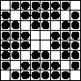

What is the largest number of counters that can be put on the cells of a chessboard so that on each horizontal, vertical and diagonal $($not only on the main ones$)$ there is an even number of counters?
INote that on a chessboard there are 16 diagonals that contain an odd number of cells and that do not have common cells. Therefore, the number of counters cannot be more than 64 - 16 = 48. The arrangement of 48 counters that satisfies the problem is shown in the figure below.
48